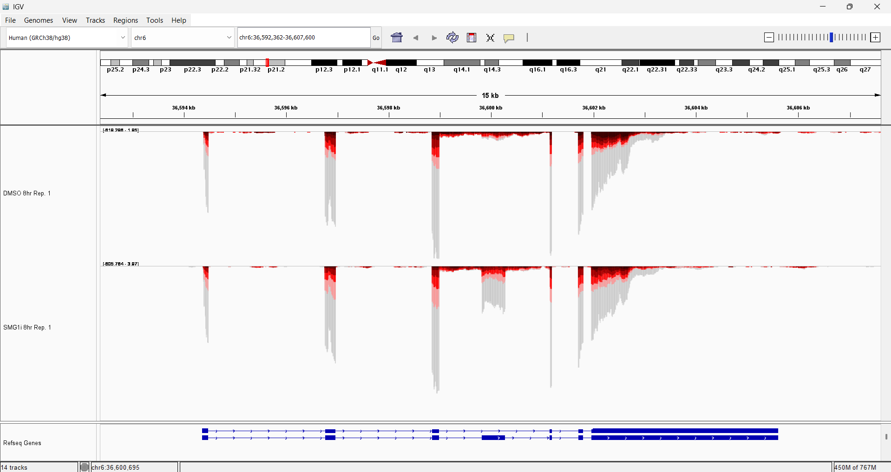

mamba create -c conda-forge -c bioconda --name deploy_snakemake 'snakemake<8.0.0' snakedeploy
# Or conda create ...fastq2EZbakR for isoform analyses
Introduction
The first step towards an isoform-level analysis of your NR-seq data is to process your data with fastq2EZbakR. Crucially, fastq2EZbakR will count mutations in your sequencing reads (necessary for all NR-seq analyses) and combine this with information as to the set of transcript isoforms in your annotation with which each read is compatible (TEC assignment; necessary for isoform-level analyses). The main output of this pipeline, which will be found in the results/cB/ after completion, will be the input for the EZbakR isoform-level analysis.
Running the pipeline
Step 0: Setup
fastq2EZbakR uses conda/mamba to automatically install all necessary dependencies the first time you run the pipeline. Thus, you should install one of these before running fastq2EZbakR.
Historically, I have suggested installing mamba over conda, as Mamba was often orders of magnitude faster than conda for fastq2EZbakR dependency installation. Recently though, conda has added support for using the same underlying solver that mamba uses (libmamba). Thus, if you already have conda installed, check out this documentation for how to configure the faster solver.
Once you have mamba/conda installed, create a conda environment with Snakemake and Snakedeploy installed:
Installing a Snakemake version < 8.0.0 is not strictly necessary for using fastq2EZbakR, but it insures compatibility with some of the HPC deployment strategies documented here.
Step 1: Deploy
Active your conda environment and “deploy” fastq2EZbakR like so:
conda activate deploy_snakemake
snakedeploy deploy-workflow https://github.com/isaacvock/fastq2EZbakR.git . --branch mainThis will create two new directories: config and workflow. config will include the config.yaml file that specifies what your input to the pipeline will be and sets a number of parameters that tunes how the pipeline is run. workflow contains a singular Snakefile that specifies the link at which all of the pipeline code is hosted. This is a convenient way to deploy a Snakemake pipeline, as it avoids you having to clone the entire repo and thus makes it easier to stay up-to-date with the most current pipeline version.
Step 2: Edit the config file
Assuming you are in the directory created when you clone the tutorial data repo as described in the intro, you should have a folder called data which shoud contain:
- hg38_chr6_subseq.fa: FASTA file to align reads to
- hg38_refseq_subseq.gtf: RefSeq GTF file with genomic feature coordinates, used for feature assignment of reads and transcript isoform quantification.
- fastqs: directory containing a number of sub-directories, each containing a pair of FASTQ files.
In practice, you will have to download a relevant genome FASTA file and annotation GTF file yourself. Furthermore, in the preprint we advocate for using your RNA-seq data to augment and filter a conservative reference (like RefSeq for human data; Ensembl annotations filtered for high support level isoforms would also be acceptable) with StringTie or similar tools. Our personal annotation assembly strategy (StringTie + post-hoc trimming/isoform flagging discussed in preprint and here) is implemented in a Snakemake pipeline called AnnotationCleaner.
You need to edit the following sections of your config file to specify input data and desired pipeline settings for isoform-level analyses:
samples
Paths to FASTQ file containing directories. Each directory should contain a single FASTQ file (for single-end data) or a pair of FASTQ files (for paired-end data).
samples:
DMSO_8hr_1: data/fastqs/DMSO_8hr_1
DMSO_8hr_2: data/fastqs/DMSO_8hr_2
DMSO_8hr_3: data/fastqs/DMSO_8hr_3
DMSO_8hr_nos4U: data/fastqs/DMSO_8hr_nos4U
SMG1i_8hr_1: data/fastqs/SMG1i_8hr_1
SMG1i_8hr_2: data/fastqs/SMG1i_8hr_2
SMG1i_8hr_3: data/fastqs/SMG1i_8hr_3
SMG1i_8hr_nos4U: data/fastqs/SMG1i_8hr_nos4Ucontrol_samples
This specifies which samples are -s4U samples and should thus be used for SNP calling. In practice, if you have lots of -s4U samples, you only need to specify 1 or 2 of them:
control_samples: ['SMG1i_8hr_nos4U', 'DMSO_8hr_nos4U']PE
Specify whether library is paired-end. Soon this will be automatically detected, but for now you need to tell fastq2EZbakR that this is a paired-end dataset
PE: Truegenome
Specify the path to the genome FASTA file. This can be relative to the directory in which you will run Snakemake (i.e., the top of the Isoform_Analysis_Tutorial direcotry), or an absolute path to the file:
genome: data/hg38_chr6_subseq.faannotation
Specify the path to the genome annotation GTF file. Again, relative or absolute paths are acceptable. The example here is a relative path as in the genome example:
annotation: data/hg38_refseq_chr6subseq.gtfindices
Relative or absolute path to, and name of, directory created to contain alignment indicies. You need to use STAR (the default fastq2EZbakR aligner) for transcript-isoform level analyses and so I have chosen to name it to reflect that aligner choice:
indices: data/star_chr6_subseqstrandedness
Strandedness of your library. This data is reverse stranded, meaning that the first read in a pair represents the reverse complement of the original RNA’s sequence:
strandedness: "reverse"features
This is the key part. For transcript isoform level analyses, you need to turn on assignment of reads to their transcript equivalence class (TEC; tec in config). Here, I have also turned on two other non-default feature assignment strategies: assignment of reads to exonic bins (like in DEXSeq) and exon-exon junctions. We will use these two strategies in the EZbakR portion of the tutorial as they provide complementary information to the TEC analysis:
features:
genes: True
exons: True
tec: True
exonic_bins: True
junctions: True
eej: False
eij: Falseflat_annotation
Scroll down a bit and you will see this parameter. Since I have specified exonic_bins to True in features, a DEXSeq flattened annotation will be created. The flat_annotation parameter allows you to specify the name and location of this annotation:
flat_annotation: "data/hg38_chr6subseq_flat.gtf"final_output
Scroll down further and you will see the final_output parameter. The default will work fine here, but to get you some useful experience, I would suggest also turning on the arrow output, as this can be helpful when working with larger datasets using EZbakR. I’ll show you how in the EZbakR portion of this tutorial:
final_output:
cB: True
cUP: False
arrow: Truestar_sam_tags
Keep scrolling down and you will see the star_sam_tags parameter. This specifies which additional bam file tags to include in the STAR alignment output. Since I specified the junction feature assignment (junctions: True in features), you should specify the STAR-specific junction information tags (jI and jM):
star_sam_tags: ["NH", "HI", "AS", "NM", "MD", "nM", "jI", "jM"]Other parameters
Everything else can be left as is for this analysis, but some other parameters you may want to edit for your own analyses include:
fastp_adaptersandfastp_parameters: The former specifies adapter sequences for fastp to trim, and the latter specifies optional trimming parameters. I often like to do some conservative trimming, which may look like settingfastp_parametersto"--trim_poly_x --cut_tail --cut_front --trim_tail1 3 --trim_front1 3 --trim_front2 3 --trim_tail2 3", which hard trims the ends of all reads and also does some polyA/G and low quality base trimming.star_align_params: This sets optional arguments for STAR alignment. The default config file has some standard settings that I would suggest, including lenient mismatch penalization and end-to-end alignment (rather than allowing soft-clipping). The latter is important for assignment of reads to exons, as soft-clipping can mess with this strategy (as discussed in the docs).
Step 3: Run pipeline
Navigate to the top of the Isoform_Analysis_Tutorial directory and do a dry run of the pipeline with :
snakemake -n --cores all --use-conda --rerun-triggers mtime --keep-goingThe -n flag makes this a “dry run”, which means that it just checks to see if the pipeline can be run as configured, throws an informative error if it finds something wrong, and tells you all of the steps that will be run if everything looks good. You can then actually run the pipeline by removing this flag:
snakemake --cores all --use-conda --rerun-triggers mtime --keep-goingWith this downsampled dataset and a 4 core laptop, the full pipeline should take about 20 minutes to run with this strategy. By default, all of the steps in the pipeline will run serially (i.e., one after another). This is often not the best way to run fastq2EZbakR, or any Snakemake pipeline. If you are running the pipeline in an HPC environment, there are several ways to get Snakemake to more effectively use all of the resources available to you, and to thus run each step of the pipeline as a separate job, with several jobs able to be queued up in parallel in many cases. See here and here for some details. If you are using Snakemake version >= 8.0.0, checkout the executor plug-ins here.
Step 4 (Optional): load tracks
Follow the steps here to load the colored tracks created by fastq2EZbakR (found in the results/tracks directory). You can then zoom in on a particular locus, like SRSF3 to see the dramatic effect of SMG1 inhibition at particular loci

Next steps
If everything ran smoothly, you are ready to move on to the EZbakR portion of this tutorial! The cheatsheet directory of this tutorial repo contains the important expected output, if you want to compare what you got to the “right answers”. You can also use the data in cheatsheet in case you want to skip right to the EZbakR portion without waiting for fastq2EZbakR to finish running.